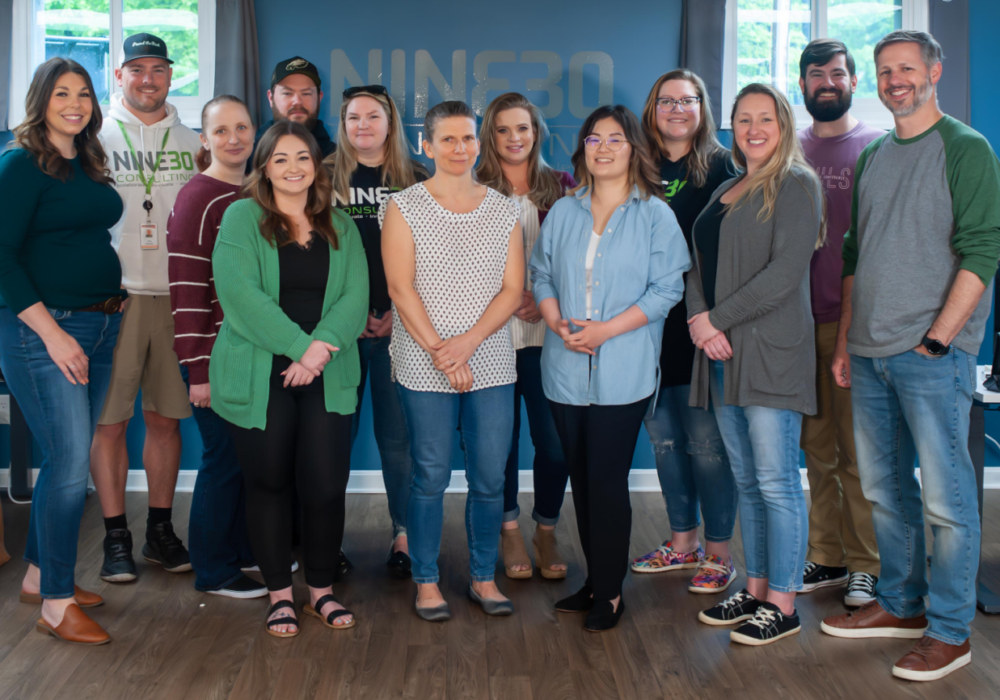

Meet the Nine 30 team and learn how their diverse backgrounds
and areas of expertise help us collaborate, innovate, and elevate.

Andrew, the dynamic Founder and President of Nine 30 Consulting, brings
over 20 years of invaluable experience to the helm. An ESTP at heart, Andrew's
entrepreneurial spirit led him to establish Nine 30, a venture driven by his passion to
collaborate, innovate, and elevate. His leadership style reflects a hands-on approach,
navigating challenges with the same tenacity that inspired the company's inception.
Andrew's strategic vision, coupled with a relentless pursuit of excellence, positions
Nine 30 as a hub for dynamic collaboration and transformative innovation in the consulting landscape.
Andrew Fitzgerald
Caitlin is a visionary Senior System Admin and Analyst, offering a wealth
of expertise to our team. Her INTP personality drives brilliant problem-solving and
innovative solutions, elevating our systems to new heights. Collaborative and knowledge-thirsty,
Caitlin's logical creativity makes her an indispensable team member. We eagerly anticipate her
continued contributions, confident in her ability to shape the future of our systems.
Caitlin Nutt
Rebekah is an empathetic Financial Analyst. As an INFP, she brings a
unique perspective to her role, understanding the human side of financial decisions.
With a keen eye for detail, Rebekah navigates complex data, providing meaningful insights.
Her compassionate and collaborative nature fosters strong team dynamics, making her an
invaluable asset. Beyond her profession, Rebekah's creative spirit and passion for personal
growth enrich her contributions. We look forward to witnessing her continued success in
financial endeavors.
Rebekah Stefanic
Samuel is a perceptive Financial and Management Analyst, bringing INFJ insights to the table.
With an innate ability to understand underlying motivations, Samuel navigates complex financial
scenarios with a holistic approach. His meticulous attention to detail ensures accuracy in analyses.
As an empathetic and caring team player, he fosters harmonious collaborations. Samuel's devotion to helping
team members and clients alike sets him apart. His strong sense of purpose and dedication to ethical
practices make him an indispensable asset to our team.
Samuel Wright
JC is a perceptive and analytical Financial Analyst, blending an ISTP personality’s unique insights
with financial expertise. With an innate ability to discern underlying patterns, JC approaches complex
financial scenarios with a pragmatic and holistic approach. As a reserved yet effective team player, he fosters
seamless collaborations within the organization. JC's passion for continuous improvement and his deep
understanding of the team's goals beyond numbers enrich his contributions. His unwavering sense of purpose
and commitment to ethical practices make him an invaluable asset to our team.
JC Hofmeister
Lauren is a Financial Analyst for the JSE team, embodying the ENFJ personality type. With an innate
ability to understand and connect with others, Lauren excels in leading financial initiatives that cater to
clients' unique needs. Her exceptional interpersonal skills foster a collaborative and supportive team environment.
Lauren's meticulous approach ensures precise financial analysis and well-informed decisions. Beyond her role, her
dedication to making a positive impact extends to community involvement, reflecting her caring and altruistic nature.
Lauren's guidance and empathy make her an invaluable asset to our team's success.
Lauren Davis
Ericka is a dedicated Acquisition Analyst with an ISFJ personality. Her meticulous attention to detail
and practical mindset ensure accurate financial analysis. Erika's strong sense of duty and commitment to teamwork
make her a reliable and supportive team member. As an ISFJ, her caring nature extends to fostering a harmonious
work environment. Dedicated to excellence, she brings stability and reliability to our financial operations.
Ericka Smith
Reeghan is a passionate Financial Analyst, characterized by an ENFJ personality type.
With a natural ability to connect with others, Reeghan excels in understanding clients' financial
needs and providing personalized solutions. Her strong interpersonal skills and empathetic nature foster
positive team dynamics. As a junior member of the financial team, she approaches every task with enthusiasm
and a collaborative spirit. Reeghan's drive to make a positive impact and dedication to helping others make
her an invaluable asset to our organization.
Reeghan Adkins
Annie is a proficient QLIK and Data Expert, embodying the ISFJ personality type.
With a meticulous and practical approach, she excels in analyzing and interpreting data insights using QLIK tools.
Anne's attention to detail ensures accurate and reliable data analysis, providing valuable business solutions.
As an ISFJ, she is dependable and dedicated, striving for excellence in every project she undertakes.
Annie's collaborative and supportive nature fosters a harmonious team environment. Beyond her expertise,
her caring and empathetic demeanor enriches her interactions, making her an invaluable asset to our data team.
Annie McGee
Mike is a Financial Analyst with an ISTJ personality type. His methodical and detail-oriented
approach makes him adept at handling financial data with precision. Mike's strong sense of responsibility and
commitment to accuracy ensure reliable analyses. He approaches every task with
a determined work ethic, eager to learn and grow in his role. Mike's practical mindset and adherence to established
processes make him a dependable and valuable asset to our financial team.
Mike Perrie
Lexi is a diligent Financial Analyst, exemplifying the ISTJ personality type. With a systematic
and logical approach, she excels in gathering and analzying financial data. Lexi's strong sense of duty and
commitment to accuracy ensures reliable and consistent results. As a junior member of the financial team,
she eagerly embraces challenges and is dedicated to continuous improvement in her role. Lexi's reliability and
attention to detail make her an indispensable asset to the team.
Lexi Hudson
Moon, our creative UX Designer, embodies the INFP personality. With a unique blend of artistic
flair and empathetic understanding, Moon crafts user experiences that resonate emotionally. Her intuitive
design approach reflects a deep commitment to user satisfaction. As a collaborator, Moon fosters a positive
and inclusive atmosphere, bringing out the best in the team.
Moon Cortez
Diane serves as a meticulous Financial Analyst, embodying the ISFJ personality type.
Her attention to detail and practical mindset ensure accurate financial analysis.
Diane's strong sense of duty and commitment to teamwork make her a reliable and supportive team member.
As an ISFJ, Diane's caring nature extends to fostering a harmonious work environment.
Dedicated to excellence, she brings stability and reliability to our financial operations.
Diane Homberg
Alan is our dependable Financial Analyst and resident coder, showcasing the ISFJ personality.
Alan's meticulous attention to detail shines in financial analysis, ensuring precision in every calculation.
As a supportive team member, he seamlessly integrates his coding expertise to streamline processes.
Alan's caring and responsible nature contributes to a collaborative work environment.
His dedication to maintaining stability and excellence makes him a valuable asset, bridging the financial
and technical aspects with precision and reliability.
Alan Johnson
Lauren, our creative Financial Analyst, embraces the ISFP personality.
Lauren's artistic flair and adaptability shine in financial analysis, bringing a unique perspective
to data interpretation. With a hands-on approach, she navigates complexities with ease, offering innovative solutions.
Lauren's collaborative spirit fosters a positive team dynamic, enriching the work environment.
Beyond numbers, her intuitive understanding and commitment to the team's success make Lauren an invaluable asset,
blending analytical precision with a touch of artistic finesse in our financial endeavors.